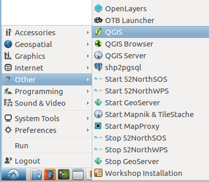
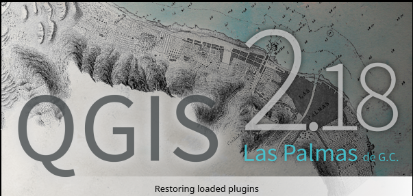
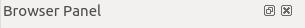
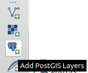
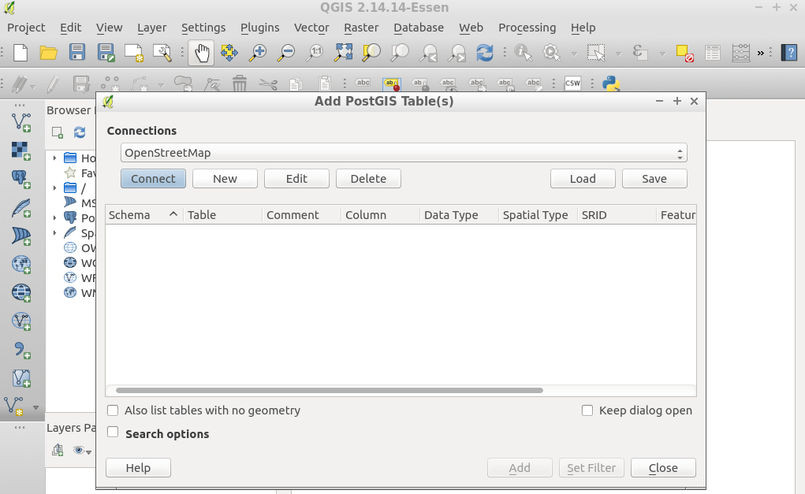
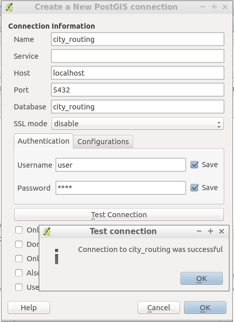
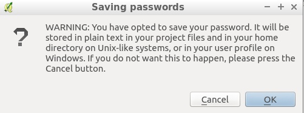
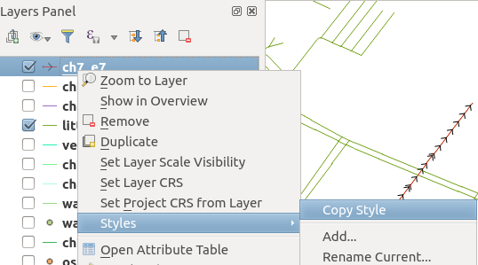
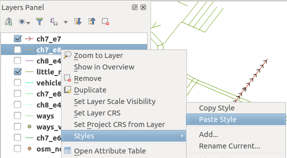

1. Använda Qgis¶

Andra typer av funktioner är pl/pgsql. När applikationskraven blir mer komplexa blir det nödvändigt att använda tidigare definierade funktioner.
1.1. Konfigurera QGIS¶
Grafer har en ”uppsättning kanter” och en ”uppsättning hörn” associerade till sig. osm2pgrouting tillhandahåller tabellen ways_vertices_pgr som är associerad med tabellen ways. När en delmängd av edges används som i vehicle_net eller i small_net, måste uppsättningen av vertices som är associerade till var och en användas för att t.ex. lokalisera det närmaste vertexet till en lat/lon-plats.
Starta QGIS från och välj från menyraden.
Observera
Platsen för QGIS kan variera.
Instruktionerna för workshopen är baserade på QGIS 2.14 Essen
Stäng bläddrarpanelen
Anslut till en posgGIS-aktiverad postgreSQL-databas genom att klicka på
Skapa en ny anslutning genom att klicka på
Fyll i informationen och testa anslutningen
- Namn:
city_routing- Värd:
localhost- Port:
5432- Databas:
city_routing- Användarnamn:
user- Lösenord:
user
Tillåt qgis att komma ihåg inloggning och lösenord

{kind=link}
{kind=link}
{kind=link}
{kind=link}
{kind=link}
{kind=link}
{kind=link}
1.2. Lägg till ett postGIS-lager¶
Klicka på så visas en lista över tabeller och vyer från databasen.
Det är nödvändigt att välja den kolumn som har ett distinkt unikt värde:
seqpå routningsvyernagidpå datavyn

1.3. Formatera ett routningslager¶
{kind=link}
{kind=link}
{kind=link}
{kind=link}
1.4. Kopiera/klistra in format¶
Välj ett förminskat lager och :menyval:`Högerklicka --> Stilar --> Kopiera stilar`
Välj ett annat lager och

{kind=link}
{kind=link}
{kind=link}
{kind=link}